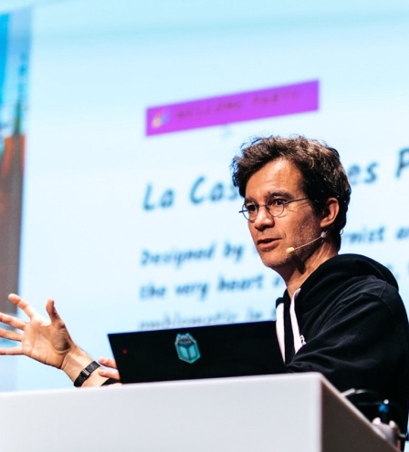

<section class="reviews" id="review">
    <div class="container">
        <!-- Радио кнопки для управления слайдами -->
        <input type="radio" name="slider" id="slide1" class="slide-radio" checked hidden>
        <input type="radio" name="slider" id="slide2" class="slide-radio" hidden>
        <input type="radio" name="slider" id="slide3" class="slide-radio" hidden>
        <input type="radio" name="slider" id="slide4" class="slide-radio" hidden>
        <div class="reviews__wrap">
            <!-- Слайд 1 -->
            <div class="reviews__wrap__content visa" id="content1">
                
                <div class="reviews__wrap__review">
                    <div class="reviews__content">
                        <p class="content-review">The Neurons Lab team demonstrated deep expertise in GenAI and worked
                            diligently to build a tailored solution that has significantly improved our marketing
                            personalization</p>
                    </div>
                    <div class="reviews__position-wrap">
                        
                        <p class="reviews__name content">Anna Melnychuk</p>
                        <p class="reviews__name-position content">Senior Marketing Manager VISA</p>
                    </div>
                </div>
            </div>
            <!-- Слайд 2 -->
            <div class="reviews__wrap__content humanity" id="content2">
                
                <div class="reviews__wrap__review">
                    <div class="reviews__content">
                        <p class="content-review">Neurons lab were a great team to work with. They helped us put
                            together the proposal for this challenging innovative project, and always acted with good
                            grace and insight as we encountered and overcame difficulties. All the problems are not
                            solved, but we have a much better handle on the issues and potential solutions. Thanks
                            Lilia, Artem and team.</p>
                    </div>
                    <div class="reviews__position-wrap">
                        
                        <p class="reviews__name content">Peter Joshi</p>
                        <p class="reviews__name-position content">Chief Scientific Officer</p>
                    </div>
                </div>
            </div>
            <!-- Слайд 3 -->
            <div class="reviews__wrap__content penpot" id="content3">
                
                <div class="reviews__wrap__review">
                    <div class="reviews__content">
                        <p class="content-review">I love how Neurons Lab is able to combine a very results-oriented
                            methodology with the built-in uncertainty of pure AI research. They are able to achieve this
                            by making sure they have picked your brain as much as possible. They have been key in
                            assisting us in some of our strategic decision-making process and they have become our go-to
                            critical friend in ML/AI.</p>
                    </div>
                    <div class="reviews__position-wrap">
                        
                        <p class="reviews__name content">Pablo Ruiz-Múzquiz</p>
                        <p class="reviews__name-position content">CEO at Kaleidos</p>
                    </div>
                </div>
            </div>
            <!-- Слайд 4 -->
            <div class="reviews__wrap__content peakdefence" id="content4">
                
                <div class="reviews__wrap__review">
                    <div class="reviews__content">
                        <p class="content-review">We needed a professional and flexible partner while going through a
                            fundamental pivot. Neurons Labs helped us to add gen AI capabilities to an existing
                            successful platform. This enabled Peak Defence to evolve and unlock new capabilities for its
                            customers. Neurons Lab team brings experience, good organization and creativity to the
                            projects. That combo makes it efficient and fun to work together. We recommend these guys
                            without hesitation.</p>
                    </div>
                    <div class="reviews__position-wrap">
                        
                        <p class="reviews__name content">Roman Jasin</p>
                        <p class="reviews__name-position content">Co-founder & Board Member of Peak Defence</p>
                    </div>
                </div>
            </div>
        </div>
        <!-- Пагинация -->
        <div class="slider-pagination__wrap">
            <label for="slide1" class="slider_item"></label>
            <label for="slide2" class="slider_item"></label>
            <label for="slide3" class="slider_item"></label>
            <label for="slide4" class="slider_item"></label>
        </div>
    </div>
</section>